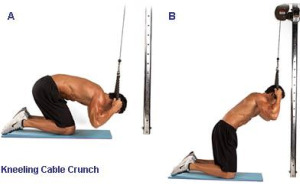
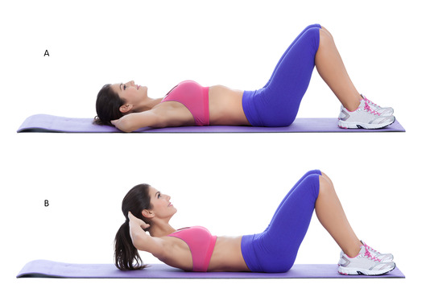
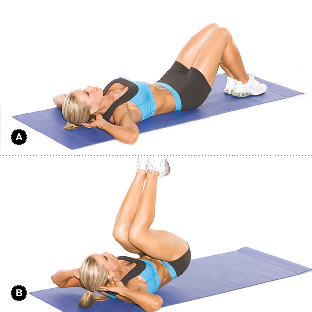
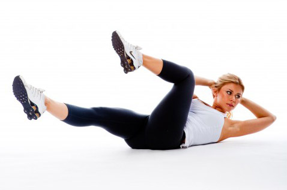
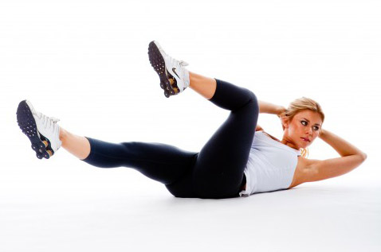
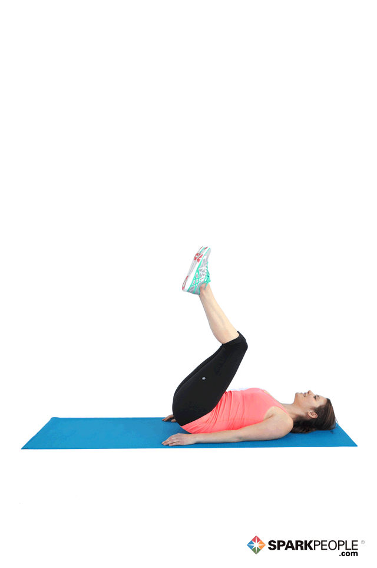
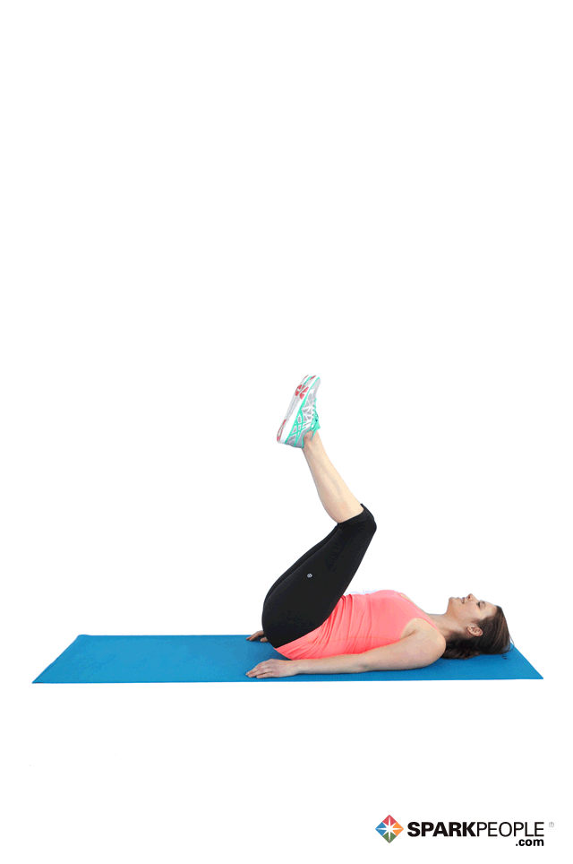

Sample Core Workout 1
Cable Crunch

Barbell Side Bend

Crunches

Reverse Crunch
3 sets, 12-15 reps (30-45 seconds rest) 3 sets, 12 reps (30 seconds rest) 3 sets, 12 reps (30 seconds rest) 3 sets, 12-15 reps (45 seconds rest)
Seated Barbell Twist
Air Bike
Crunch - Hands Overhead
Flat Bench Lying Leg Raise
 



3 sets, 8-12 reps (30 seconds rest) 3 sets, 12 reps (30 seconds rest) 3 sets, 12-15 reps (30 seconds rest) 3 sets, 8 reps (30 seconds rest)
Sample Core Workout 3
Frog Sit-Ups
Jackknife Sit-Up
Oblique Crunches
Reverse Crunch


 

3 sets, 12-15 reps (30 seconds rest) 3 sets, 12-15 reps (30 seconds rest) 3 sets, 12 reps (30 seconds rest) 3 sets, 12-15 reps (30 seconds rest)
Sample Core Workout 4
Russian Twist
Ab Crunch Machine
Barbell Side Bend
Crunch - Legs On Exercise Ball


3 sets, 12-15 reps (30 seconds rest) 3 sets, 8-12 reps (30-55 seconds rest) 1 set, 8 reps (each side, 30 seconds rest) 3 sets, 8-12 reps (30 seconds rest)
Sample Core Workout 5
Decline Crunch
Dumbbell Side Bend
Exercise Ball Crunch
Flat Bench Leg Pull-In
.gif)


3 sets, 8-12 reps (30-45 seconds rest) 3 sets, 8 reps (30 seconds rest) 3 sets, 12-15 reps (30 seconds rest) 3 sets, 12 reps (30 seconds rest)